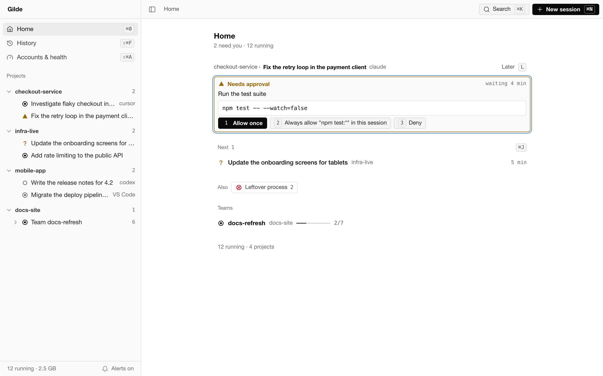
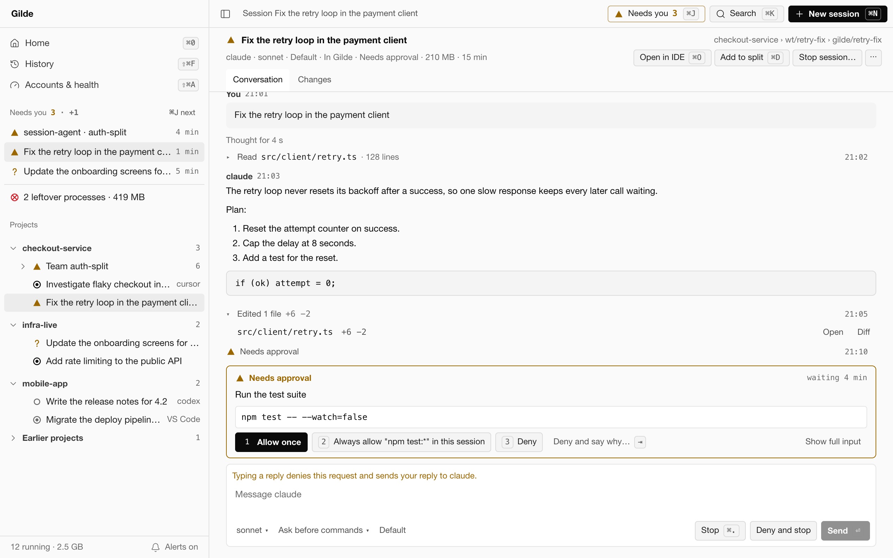
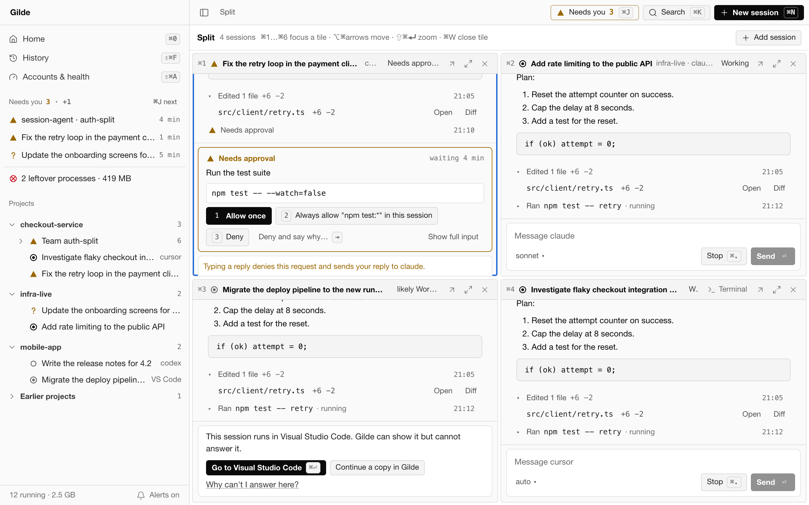
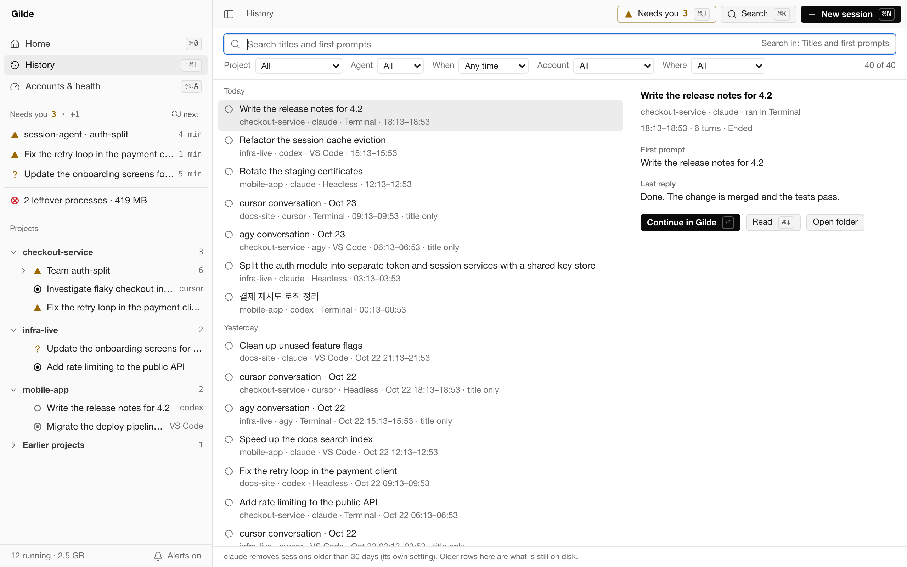
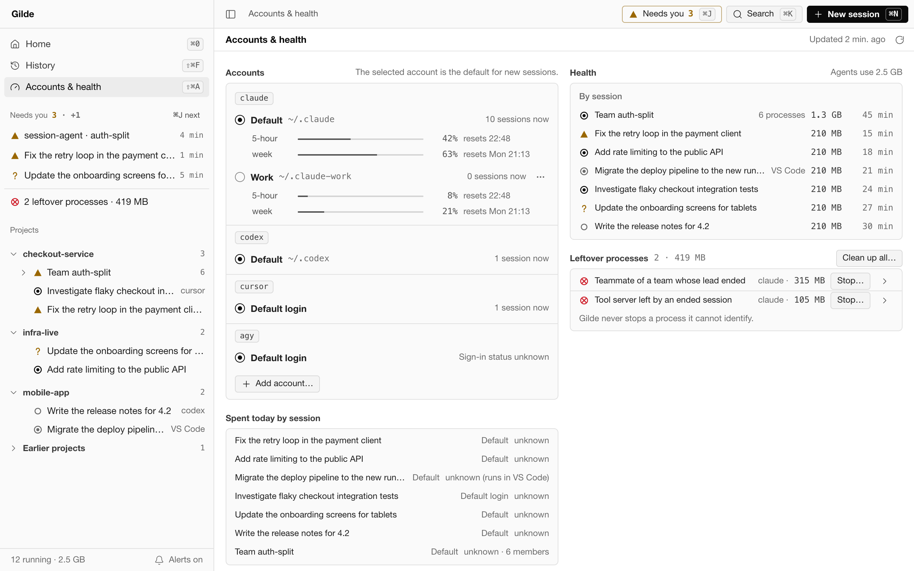

Sessions are everywhere
Agents run in terminals, in editors and in the background, across projects and accounts. Finding out which one is doing what means opening each of them.
Preview macOS · Apple silicon Apache-2.0
Gilde is an agent-centred desktop IDE for macOS. It starts and supervises agent CLIs — claude, codex, cursor-agent and agy — shows the sessions you started elsewhere, and keeps one ranked list of what needs you: an approval, a question, an error, a reply.
For developers who run several coding agents across several projects at once. The orchestrator is optional.
A preview, distributed as source. Local only. No telemetry.
The problem
Agents run in terminals, in editors and in the background, across projects and accounts. Finding out which one is doing what means opening each of them.
An agent that asks for permission or asks a question stops until someone answers. While you work in one window, the request in another waits.
Ended sessions and teams can leave agent processes and tool servers running. They keep their memory, and nothing points at them.
Capabilities
⌘0Home
Home opens on the one thing that needs you most, then the next few, with counts for everything else. Answer it right there, put it off with Later, or go to the next one.

Conversation · Terminal · Turn by turn
Sessions that Gilde starts can be driven from the app. Conversation is a structured chat with approval cards, for claude. Terminal is the agent's own screen inside Gilde, with approval cards read from that screen. Turn by turn runs codex, cursor-agent or agy one run per turn.

⌘DAdd to split
Split puts two to six live sessions in tiles. ⌘1…⌘6 focus a tile, ⌥⌘ with an arrow moves to the tile beside it, ⇧⌘⏎ zooms one.

Panes · Board · Floor
A team's lead and members open as Panes, as a Board of tasks and messages, or as a Floor: a pixel-style plan with a room per project and a desk per agent, where shelves hold the work to do and the work done. The Floor screen shows every agent across your projects at once.

⇧⌘FHistory
History lists past sessions of the agents on this Mac, including the ones Gilde did not start. Search titles and first prompts, filter by project, agent, time, account and where a session ran, then read it, continue it in Gilde, or continue a copy.

⇧⌘AAccounts and health
Each account's usage windows with their reset times, the account new sessions use by default, the memory and running time of every session, and the processes ended sessions left behind — on one screen.

How it works
Security and privacy
Gilde sends your data nowhere. It has no telemetry, no analytics, no update check and no network client of its own; the only network traffic is what the agent CLIs you run produce.
Messages, tool input and output, titles and prompts live in memory only. The state database holds metadata — ids, states, timestamps, counts — and a schema test fails on any column that could hold content.
The agents' folders are read-only to Gilde, and a path filter refuses key files, lock files, token and OAuth files before any open. Gilde never signs in for you and does not read other processes' environment values.
A session started elsewhere is shown, never typed into. Clean-up stops only leftover processes it can identify, after you confirm.
Found a vulnerability? Report it privately: on GitHub, Security → Report a vulnerability, or by e-mail to toragonite@gmail.com. Please do not open a public issue for it.
Requirements
claude, codex, cursor-agent or agy. Conversation mode needs claude 2.1.268 or newer; older versions run in Terminal mode.git for worktrees and the Changes view, an IDE for Open in IDE, and Claude Code Orchestrator for its teams and accountscodesignNot supported by this build: Intel Macs (a Rosetta shell on Apple silicon included), Linux and Windows. The build pins one Node runtime, for macOS on arm64, and the process supervision reads macOS interfaces.
Build from source
There is no binary download. The preview is distributed as source, and these are the repository's own scripts.
Verified on macOS (Apple silicon)
git clone https://github.com/Toragonite/gilde.git gilde
cd gildenpm ci
(cd src-tauri/sidecar && npm ci)The app and its sidecar have separate lockfiles.
npm run node:fetchDownloads Node v20.19.2 for darwin-arm64, checks it against the published SHA-256 and the hash pinned in scripts/fetch-node.sh, and ad-hoc signs it. A mismatch stops the build. Once installed, later runs do not touch the network.
npm run sidecar:buildBundles the sidecar and runs the check that no process is started outside its two supervised modules.
npm run tauri buildChecks that every manifest carries the same version, runs steps 3 and 4 again (they do nothing when their output is current), builds the frontend, compiles the app in release mode and ad-hoc signs the bundle. The first build takes several minutes. Add -- --bundles dmg for a disk image as well.
src-tauri/target/release/bundle/macos/Gilde Code.app
Drag it to Applications. An app you build yourself carries no quarantine attribute, so it opens without a Gatekeeper prompt.
For development: npm run tauri dev, or VITE_GILDE_SHOWCASE=1 npx vite for the UI on demo data in a plain browser. The full guide, with tests and troubleshooting, is BUILDING.md in the repository.
Related projects
The desktop app: sessions, approvals, teams, history, accounts and the health of the agent processes on your Mac.
A library with one adapter per agent CLI for structured runs: stream, resume, quota, cancel. Gilde's sidecar runs the turn-by-turn agents and the quota and sign-in checks through it.
Optional. An extension and the cco command, whose Teammate mode runs teams across agent CLIs and accounts. When it is installed, Gilde shows its teams and accounts read-only; without it, nothing about it appears.
FAQ
No. Gilde works on its own with the agent CLIs you have. When the orchestrator is installed, its teams and accounts appear read-only; without it, nothing about it renders.
claude, codex, cursor-agent and agy. claude runs in Conversation mode (2.1.268 or newer) or Terminal mode; the other three run turn by turn or in Terminal mode.
No. A session started elsewhere is Watching: Gilde shows it and says where it runs, but never types into it. From History you can continue a past session in Gilde, or continue a copy.
The agents you start change files as they work, as they would in a terminal. Gilde itself writes to git only when you ask: a new worktree for a session, or a commit, merge or discard in the Changes view. Its own settings and state live in ~/Library/Application Support/com.toragonite.gildecode.
No. The code has no telemetry, no analytics and no update check. Building it downloads packages and the pinned Node runtime once.
Not in this build. It is built and tested on macOS on Apple silicon; the bundled Node runtime is pinned to that platform and the process supervision uses macOS interfaces.
This preview is distributed as source only: there is no Developer ID–signed or notarized download and no auto-updater. You build the app on your own Mac with the steps above; to update, pull and build again.
Gilde Code is licensed under Apache-2.0. agent-mesh and Claude Code Orchestrator are MIT.